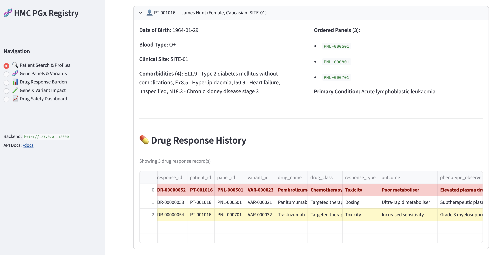
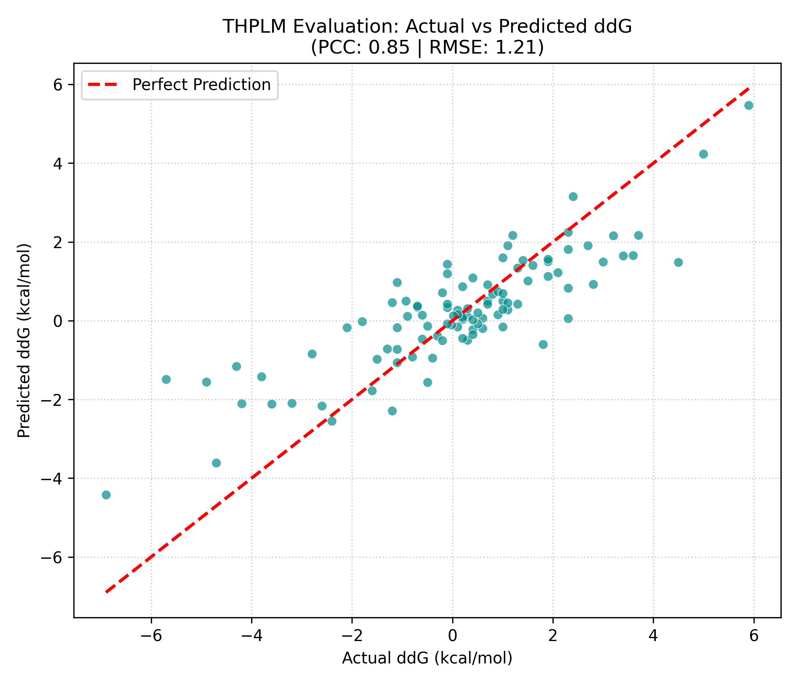

HMC Pharmacogenomics Portal
Bioinformatics Database, 2026
Perform data modelling and ingestion to MongoDB database, design api to retrieve and aggregate required data, then design the streamlit interactive interface for public users.

Protein Stability Prediction through Protein Sequence using ESM-2 Model
Computational Biology, 2026
Predict changes in protein thermodynamic stability (ΔΔG) resulting from single-point amino acid mutations using sequence embeddings extracted from a frozen ESM-2 model with protein features to train a custom 1D CNN-Dense decoder network.

Leukemia Classification Prediction
Programming for Bioinformatics, 2026
Utilized various Python libraires to develop & compare several ML models for leukemia classification (AML/ALL/CML/CLL) using gene expresion data from GEO.

Computer Science Education Web Apps
Application Development, 2025
Built a full-stack education web application for secondary school CS students, specificaly the Quiz Module and also responsible for module integration and DB management.

Computational Biology Tools
Bioinformatics II, 2026
Built a computional biology interface for data visualization of the Leukemia Classification project using Streamlit.